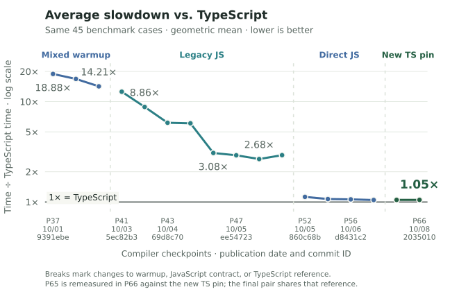
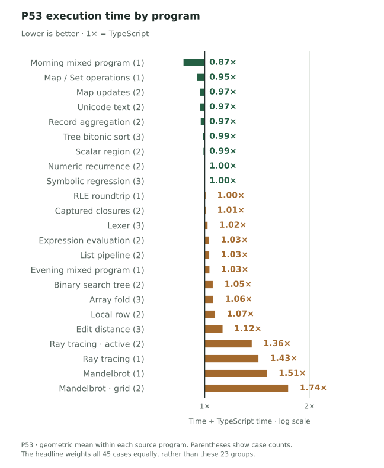

01 / Compiled program speed
TypeScript = 1× · Lower is better3.08×TypeScript execution time · suite average
45 benchmark cases · 23 programs · Phase 45 worker23
About three times the execution time of programs built by the TypeScript compiler. This average covers all 45 fixed benchmark cases, including the slow ones.
The suite average over commits
TypeScript = 1×. The benchmark set stays fixed.

How this average is calculated
Average the logarithms of the 45 Bend / TypeScript time ratios, then exponentiate. Every case gets equal weight. The per-program chart groups those same cases; its 23 bars are not equally weighted in the headline.
By program · Phase 45
The same TypeScript baseline, one program at a time.

The latest paired run improves the suite average from 6.09× to 3.08× TypeScript time. Every case remains in the average.


All measurements, commit dates & sources
Average by compiler commit
| Release / commit | Commit date | Average / TS | Source | Measurement note |
|---|---|---|---|---|
| P37 · 9391ebe ↗ | 2026-10-01 17:00:35 UTC | 18.881× | Report ↗ | Historical/variation points:1,000ms warmup/300ms target. New families:600ms warmup/250ms target. |
| P39 · e95b1c9 ↗ | 2026-10-01 21:10:07 UTC | 16.842× | Report ↗ | Historical/variation points:1,000ms warmup/300ms target. New families:600ms warmup/250ms target. |
| P40 · 8582de7 ↗ | 2026-10-03 08:31:50 UTC | 14.21× | Report ↗ | 42 exact-output comparisons reused; three fresh comparisons. |
| P41 · 5ec82b3 ↗ | 2026-10-03 18:03:39 UTC | 12.569× | Report ↗ | Phase41 image measured as same-run baseline in Phase42. |
| P42 · 714c5f5 ↗ | 2026-10-03 23:30:39 UTC | 8.862× | Report ↗ | 1,000ms warmup/300ms target. |
| P43 · 69d8c70 ↗ | 2026-10-04 04:51:32 UTC | 6.161× | Report ↗ | 1,000ms warmup/300ms target. |
| P44 · 8f57b1b ↗ | 2026-10-04 09:05:57 UTC | 6.083× | Report ↗ | 1,000ms warmup/300ms target. |
| P45 · ab74ece ↗ | 2026-10-04 19:21:20 UTC | 3.079× | Report ↗ | Same-run previous Phase44 average:6.086717×; latest/previous pair improves1.977073×. |
Latest program breakdown
| Program / source | Cases | Average / TS |
|---|---|---|
| Captured closures · 2 inputs | 2 | 0.908× |
| List pipeline · 2 inputs | 2 | 1.064× |
| Symbolic regression · 3 inputs | 3 | 1.359× |
| Tree bitonic sort · 3 inputs | 3 | 1.411× |
| Lexer · 3 inputs | 3 | 1.511× |
| Record aggregation · 2 inputs | 2 | 1.612× |
| Map updates · 2 inputs | 2 | 1.73× |
| Ray tracing | 1 | 1.741× |
| Ray tracing · 2 inputs | 2 | 1.85× |
| Edit distance · 3 inputs | 3 | 2.12× |
| Mandelbrot · 2 inputs | 2 | 2.255× |
| Binary search tree · 2 inputs | 2 | 2.371× |
| Array fold · 3 inputs | 3 | 2.584× |
| Mandelbrot | 1 | 2.606× |
| Unicode text · 2 inputs | 2 | 3.394× |
| Numeric recurrence · 2 inputs | 2 | 4.317× |
| Expression evaluation · 2 inputs | 2 | 6.428× |
| scalar region | 2 | 8.334× |
| local row | 2 | 11.143× |
| Evening mixed program | 1 | 49.328× |
| RLE roundtrip | 1 | 56.415× |
| Map / Set operations | 1 | 56.857× |
| Morning mixed program | 1 | 60.614× |
All 45 individual benchmark cases
| Case | Bend (ms) | TypeScript (ms) | Bend / TS | Source |
|---|---|---|---|---|
| local-pair | 2.629966 | 1.232341 | 2.134× | Report ↗ |
| local-fold | 0.089441 | 0.039705 | 2.253× | Report ↗ |
| scalar-region-0 | 0.004043 | 0.000067 | 60.117× | Report ↗ |
| scalar-region-8192 | 0.115216 | 0.099728 | 1.155× | Report ↗ |
| complete-generic-row32 | 0.394599 | 0.006782 | 58.181× | Report ↗ |
| mandelbrot | 0.134694 | 0.051676 | 2.606× | Report ↗ |
| editdist | 10.49904 | 4.944453 | 2.123× | Report ↗ |
| tree-bitonic | 0.361228 | 0.283662 | 1.273× | Report ↗ |
| lexer | 2.459971 | 1.670756 | 1.472× | Report ↗ |
| symreg | 1.471297 | 1.105941 | 1.33× | Report ↗ |
| test-morning-program | 0.198779 | 0.003279 | 60.614× | Report ↗ |
| test-evening-program | 0.130006 | 0.002636 | 49.328× | Report ↗ |
| test-rle-roundtrip | 0.031776 | 0.000563 | 56.415× | Report ↗ |
| test-map-set-ops | 1.166426 | 0.020515 | 56.857× | Report ↗ |
| raytrace | 59.552787 | 34.206364 | 1.741× | Report ↗ |
| variation-editdist-0-17 | 2.636118 | 1.231829 | 2.14× | Report ↗ |
| variation-editdist-3-123 | 20.868341 | 9.946377 | 2.098× | Report ↗ |
| variation-lexer-6-17 | 0.639665 | 0.409745 | 1.561× | Report ↗ |
| variation-lexer-10-123 | 9.943015 | 6.62028 | 1.502× | Report ↗ |
| variation-tree-bitonic-6-17 | 0.073094 | 0.03707 | 1.972× | Report ↗ |
| variation-tree-bitonic-9-123 | 0.818423 | 0.731906 | 1.118× | Report ↗ |
| variation-symreg-4-17 | 0.776624 | 0.550234 | 1.411× | Report ↗ |
| variation-symreg-7-123 | 2.495686 | 1.867078 | 1.337× | Report ↗ |
| variation-local-fold-128-0 | 0.007464 | 0.001443 | 5.174× | Report ↗ |
| variation-local-fold-8192-123 | 0.173331 | 0.117043 | 1.481× | Report ↗ |
| variation-mandelbrot-grid-4-7 | 0.042457 | 0.015729 | 2.699× | Report ↗ |
| variation-mandelbrot-grid-5-31 | 0.437483 | 0.232316 | 1.883× | Report ↗ |
| variation-ray-active-64-2440 | 0.560013 | 0.301493 | 1.857× | Report ↗ |
| variation-ray-active-256-2240 | 2.294758 | 1.245125 | 1.843× | Report ↗ |
| coverage-closures-64 | 0.009719 | 0.005624 | 1.728× | Report ↗ |
| coverage-closures-256 | 0.009908 | 0.020757 | 0.477× | Report ↗ |
| coverage-list-pipeline-128 | 0.01269 | 0.00642 | 1.977× | Report ↗ |
| coverage-list-pipeline-512 | 0.015867 | 0.02772 | 0.572× | Report ↗ |
| coverage-unicode-text-16 | 0.091654 | 0.021317 | 4.3× | Report ↗ |
| coverage-unicode-text-64 | 0.230372 | 0.085979 | 2.679× | Report ↗ |
| coverage-map-churn-32 | 0.277506 | 0.142599 | 1.946× | Report ↗ |
| coverage-map-churn-128 | 1.170368 | 0.760825 | 1.538× | Report ↗ |
| coverage-numeric-recurrence-256 | 0.013713 | 0.001984 | 6.911× | Report ↗ |
| coverage-numeric-recurrence-1024 | 0.020574 | 0.007628 | 2.697× | Report ↗ |
| coverage-bst-32 | 0.060614 | 0.021955 | 2.761× | Report ↗ |
| coverage-bst-64 | 0.103403 | 0.050789 | 2.036× | Report ↗ |
| coverage-expression-32 | 0.019008 | 0.002089 | 9.1× | Report ↗ |
| coverage-expression-128 | 0.040739 | 0.008973 | 4.54× | Report ↗ |
| coverage-record-aggregation-64 | 0.481869 | 0.297663 | 1.619× | Report ↗ |
| coverage-record-aggregation-256 | 1.931801 | 1.203494 | 1.605× | Report ↗ |